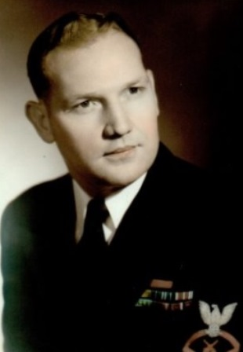
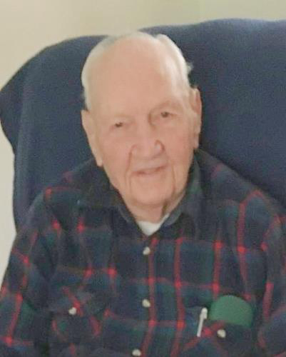

Honoring Horace Ray Duley & Our Founding Shipmates

Senior Chief (1962)
First President, and Chairman of the Board
Born on March 22, 1919, in Mt. Vernon, Indiana, Mr. Duley grew up on a farm along the Ohio River. Watching the steamboats pass his childhood home sparked a lifelong love of the water that led him to a distinguished 23-year career in the U.S. Navy.
Serving aboard the heavy cruiser USS Vincennes (CA-44), he witnessed the Doolittle Raid and defended the fleet at Midway and Guadalcanal with his famous "water geyser" strategy. He survived the sinking of the Vincennes at Savo Island and continued the fight aboard the USS Santa Fe (CL-60).
After his Naval retirement, he served as a civilian at the Naval Weapons Station Yorktown until 1976, leading the effort to incorporate our Branch in 1977.

Chairman Emeritus (Age 100+)
Alongside Mr. Duley, six other Shipmates signed the original 1977 Articles of Incorporation, dedicating themselves to the "Protection, Loyalty, and Service" of enlisted veterans.
Administrative Architect: Born in Packwaukee, Wisconsin, Gordon served from July 1948 through March 1971. As a Yeoman, his administrative precision was vital to the club’s founding. Serving as the first Vice President, he navigated the complex legal process of securing our original charter and property.
Silent Service: Blackie served from February 1945 through October 1966, a career spanning WWII, Korea, and the Cold War. A qualified submariner, his service took him from the USS John W. Weeks to the submarine USS Chivo (SS-341).
Harry's 20-year career saw him in the North Atlantic on subchasers, aboard the USS Texas, and as part of the USS Missouri crew. After retiring, he was a foundational officer whose energy helped secure the club grounds.
Gary served as President of the Peninsula Branch during its formative decades. A retired Boatswain’s Mate and local Realtor, he believed in the "personal gratification" of service, aiding military families during medical hardships.
Curtis enlisted in 1943 during WWII and served through 1962. He was a vital link between the club and the local military community during the 1977 founding, embodying the principle of Loyalty to the Sea Services.
George played a crucial role in drafting the original organizational structure, ensuring the club remained a non-profit corporation dedicated solely to the welfare of its members.
As a 501(c)(19) organization, our legacy is defined by our original 1977 charter. We maintain these records to honor our founding principles of loyalty and service to enlisted veterans.
⚓ View Original Articles of Incorporation (1977)